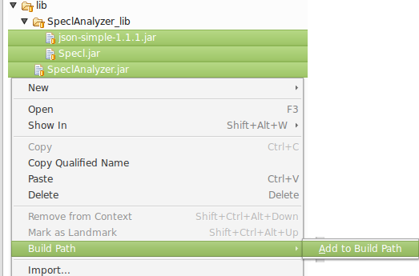
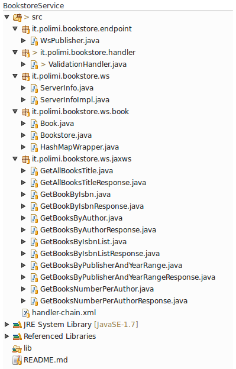
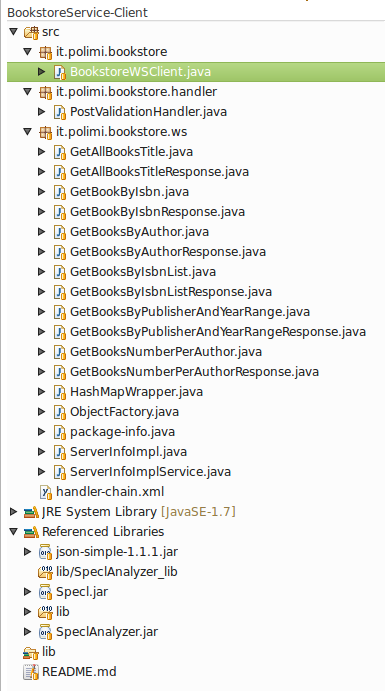

WSCoL Language
WSCoL (Web Service Constraint Language) is a special-purpose assertion DSL for the expression of monitoring directives and constraint.
WSCoL concentrates on both functional and non-functional properties, and is suitable to express general dependability properties such as safety, integrity, availability and reliability.
WSCoL could work in many other contexts: manipulation of data retrieved from a Rest service …
Grammar
The syntax is specified using Extended Backus-Naur Form (EBNF):
Model:
Declaration* Assertions ';'
Declaration:
'let' Variable 'in' Assertion ';'
Assertions:
PrimaryAssertions (('&&' | '||') PrimaryAssertions )*
PrimaryAssertions:
'(' Assertions ')' | '!(' Assertions ')' | Assertion
Assertion:
Expression Rop Expression;
Expression:
Step+ ('.' Function)* | NumericExpression | AssertionQuantified | Array | Boolean
Step:
'/' ID ('[' Predicate ']')? | Variable
Predicate:
ID Rop (STRING|NUMBER|Variable) | NUMBER | Variable
Function:
ID '(' (Values)? ')'
AssertionQuantified:
Quantifier '(' Variable 'in' Variable, Assertions ')'
Variable:
'$' ID
Rop:
'==' | '!=' | '>' | '>=' | '<' | '<='
Productions with first capital letter are refers to rules, uppercase productions are terminals.
Features
WSCoL structure present two main part: declaration part and assertions part.
Declarations part has the purpose to let the user define variables that could be used later for making assertions. The use of variables is not mandatory for the grammar, but is useful for simpler and clearer usage of the language.
Assertions part of the grammar contains the set of constraints and values to check and keep controlled. It's the kernel of the language.
Assertions are composed by using logical operators: NOT (!), AND (&&), OR (||). These have the usual priority: NOT > AND > OR. With brackets for change the priority, depending on the user's needs.
Each assertion consist of a comparison, using various operators, between two expressions.
Declaration
Allows to assign a value to a variable.
Syntax:
let $var = value ;
Where:
- let: is the keyword for starting a declaration
- $var: is the name of the assigned variable
- value: is the value to store
- ';' : is the termination character
The value could be directly declared when it's a constant (a number, a string, a Boolean or an array - see field types), or it could be the result of an assertion (the value corresponding to a certain navigation path or the result of an expression or a quantified assertion).
Here's some examples:
let $number = 10;
let $string = "Hello World!";
let $array = [1, 2, 3];
let $assertion = /path/to/the/value;
let $assertion_exp = 2 * ($number - 1); // multiply 2 and (10 - 1)
let $quantified_assertion = numOf($elem in $array, $elem > 1); // result is 2
Assertion
With the term assertion we intend true-false statement achieved with a comparison between expressions.
The comparison can be made with the use of operations like equal (==), unequal (!=), greater (>), lower (<), greater or equal (>=) and lower or equal (<=).
Each operation as sense with respect to the expressions type:
| Operation | SDO | Array | Number | String | Boolean |
|---|---|---|---|---|---|
== |
✓ | ✓ | ✓ | ✓ | implicit* |
!= |
✓ | ✓ | ✓ | ✓ | implicit* |
> |
✓ | ||||
>= |
✓ | ||||
< |
✓ | ||||
<= |
✓ |
(*) in the case of a comparison between Boolean expressions, the operation and true result becomes implicit and must be removed (for example the right one is $a.contains("string") and not $a.contains("string") == true). If the assertion checks false the expression is negated (!($a.contains("string"))).
The members of an assertion can be:
- query (see Navigation and query)
- constant (numeric or string)
- array
- quantified assertion (see Quantified Assertion & Aggregated Functions)
- numeric expression (see Numeric Expression)
- variable
Quantified Assertion & Aggregated Functions
These are assertions that iterate over a finite set of values and check every contained element with respect to the conditions.
The objective is to give the possibility to express constraints using universal and existential quantifier or aggregated functions. The statement is in the following form:
quantifier (alias in var, conditions)
Where:
- quantifier: the name of the used quantifier/function (see the table below for details)
- alias: a temp variable that will be used as parameter in the upcoming conditions
- var: the variable to which the iteration is applied, it defines the range of values that the alias can assume (var must be an array)
- conditions: the set of assertions to test at every iteration
List of functions and their characteristics
| Name | Returns | Description |
|---|---|---|
| forall | Boolean | True if, for every element, the conditions are respected |
| exists | Boolean | True if, for at least one element, the conditions are respected |
| numOf | Double | the number of elements that respects the conditions |
| max | Double | Returns the maximum element that respects the conditions |
| min | Double | Returns the minimum element that respects the conditions |
| avg | Double | Returns the average of the elements that respects the conditions |
| sum | Double | Returns the sum of elements that respects the conditions |
| product | Double | Returns the product of elements that respects the conditions |
Numeric Expression
Use and evaluate expressions, using the canonical operands: sum (+), subtraction (-), multiplication (*), division (/) and modulo (%). The priorities between these operators is exactly as they are listed before, and, as usual, precedence could be modified with brackets. Expressions can also be calculated using navigation path and variables, as long as they return numeric values.
Navigation and query
Let the user querying and retrieving values from an SDO using a notation inspired by XPath.
The queries are build by steps separated by a slash /, at each step the specified element is selected and the corresponding value is returned.
As in XPath, there are predicates used to restrict the node-set by selecting only those nodes for which a specified condition is true; acceptable predicates enable the selection of a node by its value or by its position:
// select the 'step1' whose 'step2' is greater or equal than 1
let $a = /step1[step2 >= 1];
// select the 'step1' whose 'step3' is equal to "String"
let $b = /step1[step3 == ”String”];
// select the first of the 'step1' nodes
let $c = /step1[1];
The form in the first two cases is
[ node op value ]
Where
- node: the name of the node to test
-
op: the operation to apply (note that only
==and!=has sense when value is a String) - value: the value to compare, could be a String, a number or a Variable
Field Types
The data types used inside the language are
- SDO
- Array
- String
- Double
- Boolean
Each of them as associated it's own functions, they are going to explained with the corresponding data type.
SDO
Service Data Objects use a data structure whose purpose is to facilitate communication.
The structure is tree-based with a root node and use the briefly explained traversal mechanisms that allow client programs to navigate the elements.
Objects are dynamic with a map-like structure allowing also the nesting of other SDO.
The application parse XML and JSON to SDO, and use it for elaboration.
Here's the structure of a fictitious object:
{
elem1 = "String",
elem2 = 1,
elem3 = ["A", "B", "C"],
elem4 = true,
elem5 = {
sub-elem1 = "String",
sub-elem2 = {
sub-sub-elem1 = 10
},
sub-elem3 = [1, 2]
}
}
The elem elements are in the first level, then elem5 (that is an SDO) has other sub-elements and so on...
Functions
- contains(Object elem): returns true if the object is contained (the research is deep)
- get(int index): returns the value of the index-th node (the first has index = 1)
- get(String node): returns the value of the node with name node
- cardinality(): returns the number of values contained
Array
The classical kind of array, containing a finite number of elements.
It is defined writing the elements of it inside square brackets [ ... ]
Functions
- contains(Object elem): returns true if the object is contained
- get(int index): returns the index-th element
- cardinality(): returns the length of the array
String
Is considered as string everything inside quotes "..."
Functions
- uppercase(): turns every character to uppercase
- lowecase(): turns every character to lowercase
- length(): returns the length of the string
- startsWith(String prefix): returns true if the string starts with prefix
- endsWith(String suffix): returns true if the string ends with prefix
- contains(String s): returns true if the string contains s
- concat(String s1, String s2, ...): returns String with concatenated s1, s2, etc...
- substring(int beginIndex, int endIndex): returns the substring from beginIndex to endIndex
- replace(String target, String replacement): replace every occurrence of target with replacement
Double
Every number is parsed and used as a signed double
Functions
- abs(): apply abs to the number
- ceiling(): returns the smallest integer that is greater than the number argument
- floor(): returns the largest integer that is not greater than the number argument
- round(): rounds the number argument to the nearest integer
- round-half-to-even(): rounds a number with .5 fraction to the nearest even integer
- toString(): returns the string representation of the number
Comments
There are two type of comments:
-
Line Comments start with the sequence
//and stop at the end of line -
General Comments start with the sequence
/*and continue until character sequence*/, it could contain more than one line
Comments do not nest.
Keyword
The following keywords are reserved and may not be used as identifiers
let max startsWith
in min endsWith
forall sum contains
exists avg
numOf product
Operators
The following character sequences represent operators, delimiters, and other special tokens:
== + && , ( )
!= - || ; [ ]
> * ! .
< /
>= %
<=
=
Examples
WSCoL is a very flexible language and for this reason it could be used in various contexts.
In the following sections you’ll find out some nice application.
Toy example: Book store
Just a little case to understand better about what we’re talking about.
At first you need to get the application jar, download it here.
The input file is the succeeding xml file, book.xml:
<inventory>
<name>InventoryABCD</name>
<book>
<year>2000</year>
<title>Snow Crash</title>
<authors>
<author>Neal Stephenson</author>
</authors>
<publisher>Spectra</publisher>
<isbn>0553380958</isbn>
<price>15</price>
</book>
<book>
<year>2005</year>
<title>Burning Tower</title>
<authors>
<author>Larry Niven</author>
<author>Jerry Pournelle</author>
</authors>
<publisher>Pocket</publisher>
<isbn>0743416910</isbn>
<price>6</price>
</book>
<book>
<year>1995</year>
<title>Zodiac</title>
<authors>
<author>Neal Stephenson</author>
</authors>
<publisher>Spectra</publisher>
<isbn></isbn>
<price>7.50</price>
</book>
</inventory>
The following assertions are based on this file.
First Assertion
Now we have to generate a wscol file with the assertions to verify. For convenience just save assertions.wscol in the same folder as the xml file and the application jar, then copy-and-paste the next assertion:
/inventory/book[1]/title == "Snow Crash";
Launch the application from cli with the command
$ java –jar WSCoL-App.jar assertion.wscol –xml book.xml
The assertion says that the title of the first book (note the use of the predicate in square brackets) is equal to “Snow Crash” and, obviously, the result is true.
The expression returns a string and correctly compare it with the string on the right side that we have written.
Due to the flexibility of WSCoL, the same assertion can be written in different manners:
/* Alternative 1 */
let $a = /inventory/book[1]/title;
let $b = “Snow Crash”;
$a == $b;
In this case the result of the expression is stored in the variable $a, while our string is in $b.
Then the assertion simply test the equality of the two.
/* Alternative 2 */
let $a = /inventory/book[1];
$a/title == “Snow Crash”;
Instead, in the alternative two, the value assigned to the variable $a is an SDO, i.e. an object containing other objects (as you can see from the xml file, a book holds nodes like title, authors, publisher, etc…).
A representation of the SDO defined by $a is
$a = {
year = 2000,
title = ”Snow Crash”,
authors = {
author = ”Neal Stephenson”
},
publisher = ”Spectra”,
isbn = ”0553380958”,
price = 15
}
With the expression $a/title we get the string contained by the property title.
You can play as you like with variables and xpath navigation. But there’s some exceptions: for example you cannot apply a predicate to a variable (the solution is to use the function get()) or use a variable in steps that is not the first.
Note that the use of function get is possible when you apply it to an SDO or to an array, it has no sense when the cardinality of the object is one. The function is not intended to substitute the standard navigation, so use it properly.
/* Wrong use of predicate */
let $a = /inventory/book;
$a[1]/title == “Snow Crash”;
/* Correct way */
let $a = /inventory/book;
$a.get(1).get(‘title’) == “Snow Crash”;
Another possible alternative to the first assertion is the next one
/* Alternative 3 – Array */
let $a = /inventory/book/title;
$a.get(1) == “Snow Crash”;
In this situation, the declaration’s result is an array with the titles of all the books found:$a = [“Snow Crash”, “Burning Tower” “Zodiac”].
Then, with the get() function, you obtain the first element of the array: “Snow Crash”.
Second Assertion - Aggregated Functions
let $books = /inventory/book;
let $authors = $books/authors/author;
exists($author in $authors, numOf($book in $books, $book/authors.contains($author)) > 1);
In this case, we are looking for the authors that has written more than one book.
The declarations returns, respectively, the array containing all books and the array with all the authors.
The assertion is the result of the nesting of two quantified assertions.
The exists assertion starts iterating over the elements of the authors array, and, for each author, checks the condition. The condition is a comparison between another quantified assertion (this time a numOf) which returns a number that as to be greater than one to prove the condition of the exists.
The numOf iterate over all the books, obtains the authors of each book and, with the contains() function, check if the actual author we are searching is into that book’s authors array.
The external assertion has to be true; as already said, this is implicitly deducted from the grammar.
Third Assertion - Negated Assertion
/* Negated Assertion */
let $books = /inventory/book;
!( exists($book in $books, $book/title.startsWith($book/publisher.substring(0,1))) );
This one assert that there is no books which title starts with the same letter as its publisher.
As you can see, the exists assertion is negated (inside brackets and preceded by the exclamation mark !(...)).
The startsWith() bear out the prefix of the book title using as parameter the result of another expression: after getting the book publisher, it takes the first letter by the use of the substring() function.
Fourth Assertion - Numeric Aggregate Functions
/* Test for arithmetic expressions (min, max, avg...) */
let $prices = /inventory/book/price;
let $min = min($price in $prices, $price > 0);
let $max = max($price in $prices, $price > 0);
let $avg = avg($price in $prices, $price > 0);
let $prod = product($price in $prices, $price > 0);
let $sum = sum($price in $prices, $price > 0);
$min == 6.00 && $max == 15 && $avg == 9.5 || $prod > 675.0 && $sum < 28.5;
Here we declare many variables, each of them is containing a number, related to the relative expression: for example, $min contains the minimum price, in the range of the array $prices, that is greater than zero (this condition is very weak, so the expression simply means ‘search the lowest price’). The same reasoning can be done for the other statements.
The assertions section presents logical operators AND (&&) and an OR operator (||): according to the operators priority, the AND operators comes first, so the OR is applied as showed:
($min == 6.00 && $max == 15 && $avg == 9.5) || ($prod > 675.0 && $sum < 28.5)
Different orders are indicated with the use of bracket, as in the next snippet:
$min == 6.00 && $max == 15 && ($avg == 9.5 || $prod > 675.0) && $sum < 28.5
Fifth Assertion - Expressions
let $exp = 1 + 2 * 4 % 5;
exp == 4;
WSCoL gives also the possibility to use and evaluate numeric expressions (see Numeric Expression)
let $first_price = /inventory/book[1]/price;
$first_price + /inventory/book[2]/price > /inventory/book[3]/price;
SOAP Handler Example
Another possible use for WSCoL language is inside a SOAP Handler: an interceptor of SOAP messages where we can read and verify assertions over the passing SOAP messages.
In this example we use a simple web service based on the previous example, BookstoreService, and a client calling it. Both sides has a SOAP Handler.
Server Side
Setup
Download the required libraries, import them in your project and start coding.
Needed Libraries
- WSCoL-Analyzer.jar (download)
- WSCoL.jar (required by WSCoL-Analyzer.jar) (download)
- json-simple-1.1.1.jar (required by WSCoL-Analyzer.jar) (download)
Full Zip (download)
Installation
Simply save libraries in a known folder inside your project and import them.
The procedure in Eclipse IDE is

Import Libraries
Web Service
A simple WS, offering informations on books.
Methods are the following, the names are self-explanatory:
getBooksByAuthor(String)getBookByIsbn(String)getBooksByIsbnList(List<String>)getAllBooksTitle()getBooksNumberPerAuthor()
File: ServerInfo.java
package it.polimi.bookstore.ws;
import it.polimi.bookstore.ws.book.HashMapWrapper;
import java.util.List;
import javax.jws.WebMethod;
import javax.jws.WebService;
@WebService
public interface ServerInfo {
@WebMethod
public List<String> getBooksByAuthor(String author);
@WebMethod
public String getBookByIsbn(String isbn);
@WebMethod
public List<String> getBooksByIsbnList(List<String> isbnList);
@WebMethod
public List<String> getAllBooksTitle();
@WebMethod
public HashMapWrapper getBooksNumberPerAuthor();
}
File: ServerInfoImpl.java
package it.polimi.bookstore.ws;
import it.polimi.bookstore.ws.book.Book;
import it.polimi.bookstore.ws.book.Bookstore;
import it.polimi.bookstore.ws.book.HashMapWrapper;
import java.util.ArrayList;
import java.util.HashMap;
import java.util.List;
import java.util.Map;
import javax.jws.HandlerChain;
import javax.jws.WebService;
@WebService
public class ServerInfoImpl implements ServerInfo {
private Bookstore books;
private void setup() {
Book first = new Book((double)2000, "Snow Crash", "Neal Stephenson", null, "Spectra", "0553380958", (double)15);
Book second = new Book((double)2005, "Burning Tower", "Larry Niven", "Jerry Pournelle", "Pocket", "0743416910", (double)6);
Book third = new Book((double)1995, "Zodiac", "Neal Stephenson", null, "Spectra", "0871131811", (double)7.5);
ArrayList<Book> list = new ArrayList<>();
list.add(first);
list.add(second);
list.add(third);
books = new Bookstore(list);
}
@Override
public List<String> getBooksByAuthor(String author) {
if(books == null)
setup();
ArrayList<String> result = new ArrayList<>();
for(Book b:books.getBookstore()) {
if(b.getAuthor().equals(author) || (b.getCoauthor() != null && b.getCoauthor().equals(author))) {
result.add(b.getTitle());
}
}
return result;
}
@Override
public String getBookByIsbn(String isbn) {
if(books == null)
setup();
for(Book b:books.getBookstore()){
if(b.getIsbn().equals(isbn)){
return b.getTitle();
}
}
return "No Books Found";
}
@Override
public List<String> getBooksByIsbnList(List<String> isbnList) {
List<String> result = new ArrayList<String>();
for(String isbn:isbnList) {
String book = getBookByIsbn(isbn);
if(book.equals("No Books Found")) {
result.add(book + " with ISBN: " + isbn);
} else {
result.add(book);
}
}
return result;
}
@Override
public List<String> getAllBooksTitle() {
if(books == null)
setup();
ArrayList<String> result = new ArrayList<>();
for(Book b:books.getBookstore()) {
result.add(b.getTitle());
}
return result;
}
@Override
// Cannot return an HashMap (see http://stackoverflow.com/a/13787059)
public HashMapWrapper getBooksNumberPerAuthor() {
if(books == null)
setup();
Map<String, Integer> authors = new HashMap<String, Integer>();
for(Book b:books.getBookstore()){
if(!authors.containsKey(b.getAuthor())){
authors.put(b.getAuthor(), 1);
} else {
authors.put(b.getAuthor(), authors.get(b.getAuthor())+1);
}
if(b.getCoauthor() != null){
if(!authors.containsKey(b.getCoauthor())){
authors.put(b.getCoauthor(), 1);
} else {
authors.put(b.getCoauthor(), authors.get(b.getCoauthor())+1);
}
}
}
return new HashMapWrapper(authors);
}
}
Note that setup() method is used for generate and fill a library of class Bookstore, this and Book classes are general POJO used for this tutorial.
File: Book.java
package it.polimi.bookstore.ws.book;
public class Book {
private Double year;
private String title;
private String author;
private String coauthor;
private String publisher;
private String isbn;
private Double price;
public Book(Double year, String title, String author, String coauthor, String publisher, String isbn, Double price) {
this.year = year;
this.title = title;
this.author = author;
this.coauthor = coauthor;
this.publisher = publisher;
this.isbn = isbn;
this.price = price;
}
public Double getYear() {
return year;
}
public void setYear(Double year) {
this.year = year;
}
public String getTitle() {
return title;
}
public void setTitle(String title) {
this.title = title;
}
public String getAuthor() {
return author;
}
public void setAuthor(String author) {
this.author = author;
}
public String getCoauthor() {
return coauthor;
}
public void setCoauthor(String coauthor) {
this.coauthor = coauthor;
}
public String getPublisher() {
return publisher;
}
public void setPublisher(String publisher) {
this.publisher = publisher;
}
public String getIsbn() {
return isbn;
}
public void setIsbn(String isbn) {
this.isbn = isbn;
}
public Double getPrice() {
return price;
}
public void setPrice(Double price) {
this.price = price;
}
}
File: Bookstore.java
package it.polimi.bookstore.ws.book;
import java.util.ArrayList;
public class Bookstore {
private ArrayList<Book> bookstore;
public Bookstore(ArrayList<Book> bookstore) {
this.bookstore = bookstore;
}
public ArrayList<Book> getBookstore() {
return bookstore;
}
public void setBookstore(ArrayList<Book> bookstore) {
this.bookstore = bookstore;
}
public void addBook(Book book) {
bookstore.add(book);
}
public Book getBook(int i) {
return bookstore.get(i);
}
}
Then we declare a web service endpoint for the service which will publish outside the service for user access.
File: WsPublisher.java
package it.polimi.bookstore.endpoint;
import it.polimi.bookstore.ws.ServerInfoImpl;
import javax.xml.ws.Endpoint;
public class WsPublisher {
public static void main(String[] args) {
Endpoint.publish("http://localhost:8888/bookstorews/server", new ServerInfoImpl());
System.out.println("BookStore WebService is published!");
}
}
Finally we generate necessary Java files for the web service deployment with wsgen command from the bin folder of the project
$ wsgen -keep -verbose -cp . it.polimi.bookstore.ws.ServerInfoImpl
This will create two files for each method of the service.
Server SOAP Handler
The server side SOAP Handler we're going to build it's going to use WSCoL for checking constraints on the parameters passed to BookstoreService from service clients, for every incoming message.
We declare and initialize the analyzer with WSCoLAnalyzer analyzer = new WSCoLAnalyzer();, then we obtain the XML Document of the SOAP Message body and pass it to the analyzer that will use it as input file and parse it as an SDO (analyzer.setXMLInput(soapBody.getOwnerDocument());).
//...
@Override
public boolean handleMessage(SOAPMessageContext context) {
System.out.println("Server : handleMessage()......");
Boolean isResponse = (Boolean) context.get(MessageContext.MESSAGE_OUTBOUND_PROPERTY);
if (!isResponse) {
WSCoLAnalyzer analyzer = new WSCoLAnalyzer();
try {
SOAPMessage soapMsg = context.getMessage();
SOAPBody soapBody = soapMsg.getSOAPBody();
// the analyzer parse the body of the SOAP Msg to an SDO
analyzer.setXMLInput(soapBody.getOwnerDocument());
Node requestNode = soapBody.getFirstChild();
String name = requestNode.getLocalName();
//...
At this point we check name (corresponding to the called method) and we evaluate WSCoL assertions on the passed arguments (see comments), we are checking pre-conditions.
//...
if (name.equals("getBooksByAuthor")) {
// we assert that the argument could not be empty
String assertion = "let $author = /Envelope/Body/getBooksByAuthor/arg0; $author.cardinality() == 0;";
try {
if(analyzer.evaluate(assertion)) {
generateSOAPErrMessage(soapMsg, "Author field could not be empty.");
}
} catch (WSCoLException e) { // this catch errors in the assertion, but responde to client a generic message
generateSOAPErrMessage(soapMsg, "Server could not respond due to validation errors in the server side SOAPHandler.");
}
} else if(name.equals("getBookByIsbn")) {
// assert that the isbn argument must be long 10 characters
String assertion = "let $isbn = /Envelope/Body/getBookByIsbn/arg0; $isbn.length() == 10;";
try {
if(!analyzer.evaluate(assertion)) {
generateSOAPErrMessage(soapMsg, "Wrong ISBN format");
}
} catch (WSCoLException e) {
generateSOAPErrMessage(soapMsg, "Server could not respond due to validation errors in the server side SOAPHandler.");
}
} else if(name.equals("getBooksByIsbnList")) {
// assert that each isbn in the list must be long 10 characters
String assertion = "let $isbns = /Envelope/Body/getBooksByIsbnList/arg0; forall($isbn in $isbns, $isbn.length() == 10);";
try {
if(!analyzer.evaluate(assertion)) {
generateSOAPErrMessage(soapMsg, "Wrong ISBN format");
}
} catch (WSCoLException e) {
generateSOAPErrMessage(soapMsg, "Server could not respond due to validation errors in the server side SOAPHandler.");
}
} else if(name.equals("getAllBooksTitle") || name.equals("getBooksNumberPerAuthor")){
// nothing to do here, no arguments
} else {
generateSOAPErrMessage(soapMsg, "Wrong operation.");
}
//...
Here's the complete code of the handler.
File: ValidationHandler.java
package it.polimi.bookstore.handler;
import it.polimi.wscol.WSCoLAnalyzer;
import it.polimi.wscol.helpers.WSCoLException;
import java.io.IOException;
import java.util.Set;
import javax.xml.namespace.QName;
import javax.xml.soap.SOAPBody;
import javax.xml.soap.SOAPException;
import javax.xml.soap.SOAPFault;
import javax.xml.soap.SOAPMessage;
import javax.xml.ws.handler.MessageContext;
import javax.xml.ws.handler.soap.SOAPHandler;
import javax.xml.ws.handler.soap.SOAPMessageContext;
import javax.xml.ws.soap.SOAPFaultException;
import org.w3c.dom.Node;
public class ValidationHandler implements SOAPHandler<SOAPMessageContext> {
@Override
public boolean handleMessage(SOAPMessageContext context) {
System.out.println("Server : handleMessage()......");
Boolean isResponse = (Boolean) context.get(MessageContext.MESSAGE_OUTBOUND_PROPERTY);
if (!isResponse) {
WSCoLAnalyzer analyzer = new WSCoLAnalyzer();
try {
SOAPMessage soapMsg = context.getMessage();
SOAPBody soapBody = soapMsg.getSOAPBody();
// the analyzer parse the body of the SOAP Msg to an SDO
analyzer.setXMLInput(soapBody.getOwnerDocument());
Node requestNode = soapBody.getFirstChild();
String name = requestNode.getLocalName();
if (name.equals("getBooksByAuthor")) {
String assertion = "let $author = /Envelope/Body/getBooksByAuthor/arg0; $author.cardinality() == 0;";
try {
if(analyzer.evaluate(assertion)) {
generateSOAPErrMessage(soapMsg, "Author field could not be empty.");
}
} catch (WSCoLException e) {
generateSOAPErrMessage(soapMsg, "Server could not respond due to validation errors in the server side SOAPHandler.");
}
} else if(name.equals("getBookByIsbn")) {
String assertion = "let $isbn = /Envelope/Body/getBookByIsbn/arg0; $isbn.length() == 10;";
try {
if(!analyzer.evaluate(assertion)) {
generateSOAPErrMessage(soapMsg, "Wrong ISBN format");
}
} catch (WSCoLException e) {
generateSOAPErrMessage(soapMsg, "Server could not respond due to validation errors in the server side SOAPHandler.");
}
} else if(name.equals("getBooksByIsbnList")) {
String assertion = "let $isbns = /Envelope/Body/getBooksByIsbnList/arg0; forall($isbn in $isbns, $isbn.length() == 10);";
try {
if(!analyzer.evaluate(assertion)) {
generateSOAPErrMessage(soapMsg, "Wrong ISBN format");
}
} catch (WSCoLException e) {
generateSOAPErrMessage(soapMsg, "Server could not respond due to validation errors in the server side SOAPHandler.");
}
} else if(name.equals("getAllBooksTitle") || name.equals("getBooksNumberPerAuthor")){
// nothing to do here
} else {
generateSOAPErrMessage(soapMsg, "Wrong operation.");
}
// tracking
soapMsg.writeTo(System.out);
System.out.println();
} catch (SOAPException e) {
System.err.println(e);
} catch (IOException e) {
System.err.println(e);
}
}
return true;
}
@Override
public boolean handleFault(SOAPMessageContext context) {
System.out.println("Server : handleFault()......");
return true;
}
@Override
public void close(MessageContext context) {
System.out.println("Server : close()......");
}
@Override
public Set<QName> getHeaders() {
System.out.println("Server : getHeaders()......");
return null;
}
private void generateSOAPErrMessage(SOAPMessage msg, String reason) {
try {
SOAPBody soapBody = msg.getSOAPPart().getEnvelope().getBody();
SOAPFault soapFault = soapBody.addFault();
soapFault.setFaultString(reason);
throw new SOAPFaultException(soapFault);
} catch (SOAPException e) {
}
}
}
SOAPHandler XML File
Create a SOAP handler XML file, and puts your SOAP handler declaration.
File: handler-chain.xml
<?xml version="1.0" encoding="UTF-8" standalone="yes"?>
<javaee:handler-chains
xmlns:javaee="http://java.sun.com/xml/ns/javaee"
xmlns:xsd="http://www.w3.org/2001/XMLSchema">
<javaee:handler-chain>
<javaee:handler>
<javaee:handler-class>it.polimi.bookstore.handler.ValidationHandler</javaee:handler-class>
</javaee:handler>
</javaee:handler-chain>
</javaee:handler-chains>
Attach Handler to BookstoreWS
To attach above SOAP handler to web service ServerInfo.java, just annotate with @HandlerChain and specify the SOAP handler file name inside.
//...
@WebService
@HandlerChain(file = "handler-chain.xml")
public class ServerInfoImpl implements ServerInfo {
//...
BookstoreWS Project Organization
Here's the directory structure of the project

Client Side
Now we develop a Webservice Client for accessing to the BookstoreWS, and attach another handler (but on client side) for use WSCoL as post-condition validator and for manipulate SOAP messages.
Setup
For the setup and installation follow the same procedure as for the server side
WS Client
We use wsimport command to parse the published service WSDL file (http://localhost:8888/bookstorews/server?wsdl) and generate all required files to access the service.
$ wsimport -keep -verbose http://localhost:8888/bookstorews/server?wsdl
parsing WSDL...
Generating code...
it/polimi/bookstore/ws/GetAllBooksTitle.java
it/polimi/bookstore/ws/GetAllBooksTitleResponse.java
it/polimi/bookstore/ws/GetBookByIsbn.java
it/polimi/bookstore/ws/GetBookByIsbnResponse.java
it/polimi/bookstore/ws/GetBooksByAuthor.java
it/polimi/bookstore/ws/GetBooksByAuthorResponse.java
it/polimi/bookstore/ws/GetBooksByIsbnList.java
it/polimi/bookstore/ws/GetBooksByIsbnListResponse.java
it/polimi/bookstore/ws/GetBooksNumberPerAuthor.java
it/polimi/bookstore/ws/GetBooksNumberPerAuthorResponse.java
it/polimi/bookstore/ws/HashMapWrapper.java
it/polimi/bookstore/ws/ObjectFactory.java
it/polimi/bookstore/ws/ServerInfoImpl.java
it/polimi/bookstore/ws/ServerInfoImplService.java
it/polimi/bookstore/ws/package-info.java
...
A client class and few methods that calls the web service and prints out the results.
File: BookstoreWSClient.java
package it.polimi.bookstore;
import java.util.ArrayList;
import java.util.List;
import javax.xml.ws.soap.SOAPFaultException;
import it.polimi.bookstore.ws.HashMapWrapper;
import it.polimi.bookstore.ws.ServerInfoImpl;
import it.polimi.bookstore.ws.ServerInfoImplService;
public class BookstoreWSClient {
private static ServerInfoImplService service;
private static ServerInfoImpl ws;
public static void main(String[] args) {
service = new ServerInfoImplService();
ws = service.getServerInfoImplPort();
testGetBooksByIsbnList();
testGetBooksNumberPerAuthor();
}
public static void testGetBooksByIsbnList() {
List<String> isbns = new ArrayList<>();
isbns.add("0553380981"); // random
isbns.add("0871131811"); // "Zodiac"
isbns.add("012345678"); // a wrong isbn
try {
System.out.println(ws.getBooksByIsbnList(isbns));
} catch (SOAPFaultException e) {
System.err.println("testGetBooksByIsbnList(): " + e.getMessage());
}
}
public static void testGetBooksNumberPerAuthor() {
HashMapWrapper bnpa = ws.getBooksNumberPerAuthor();
System.out.println("getBooksNumberPerAuthor() - Trendy Author Books Number: " + bnpa.getMap().getEntry().get(0).getValue());
}
}
Client SOAP Handler
Create a SOAP Handler on client side for extract informations from the response message and manipulate it.
It intercepts the getBooksNumberPerAuthorResponse (that returns a Map with entries where keys are the authors name and values the number of book in the store written by that author) than with WSCoL we find the author with the maximum number of book and we modify the SOAP message and remove all the other entries.
File: PostValidationHandler.java
package it.polimi.bookstore.handler;
import it.polimi.wscol.WSCoLAnalyzer;
import it.polimi.wscol.helpers.WSCoLException;
import java.io.IOException;
import java.util.Set;
import javax.xml.namespace.QName;
import javax.xml.soap.SOAPBody;
import javax.xml.soap.SOAPException;
import javax.xml.soap.SOAPFault;
import javax.xml.soap.SOAPMessage;
import javax.xml.ws.handler.MessageContext;
import javax.xml.ws.handler.soap.SOAPHandler;
import javax.xml.ws.handler.soap.SOAPMessageContext;
import javax.xml.ws.soap.SOAPFaultException;
import org.w3c.dom.Node;
public class PostValidationHandler implements SOAPHandler<SOAPMessageContext> {
@Override
public boolean handleMessage(SOAPMessageContext context) {
System.out.println("Client : handleMessage()......");
Boolean isRequest = (Boolean) context.get(MessageContext.MESSAGE_OUTBOUND_PROPERTY);
if (!isRequest) {
WSCoLAnalyzer analyzer = new WSCoLAnalyzer();
analyzer.shutdownLogger();
try {
SOAPMessage soapMsg = context.getMessage();
SOAPBody soapBody = soapMsg.getSOAPBody();
Node responseNode = soapBody.getFirstChild();
String name = responseNode.getLocalName();
if (name.equals("getBooksNumberPerAuthorResponse")) {
analyzer.setXMLInput(soapBody.getOwnerDocument());
String assertion =
"let $map_entries = /Envelope/Body/getBooksNumberPerAuthorResponse/return/map;"
+ "let $values = $map_entries/entry/value;"
+ "let $maximum = max($num in $values, $num > 0);"
+ "let $author = $map_entries/entry[value==$maximum]/key;"
+ "1==1;"; // we're interested in variables
try {
analyzer.evaluate(assertion);
Object author = analyzer.getVariable("$author");
Node map = soapBody.getFirstChild().getFirstChild().getFirstChild();
for(int i=0; i < map.getChildNodes().getLength(); i++){
Node child = map.getChildNodes().item(i);
if(!child.getFirstChild().getTextContent().equals(author)){
map.removeChild(child);
i -= 1;
}
}
} catch (WSCoLException e) {
e.printStackTrace();
}
}
// tracking
soapMsg.writeTo(System.out);
} catch (SOAPException e) {
System.err.println(e);
} catch (IOException e) {
System.err.println(e);
}
}
return true;
}
@Override
public boolean handleFault(SOAPMessageContext context) {
System.out.println("Client : handleFault()......");
return true;
}
@Override
public void close(MessageContext context) {
System.out.println("Client : close()......");
}
@Override
public Set<QName> getHeaders() {
System.out.println("Client : getHeaders()......");
return null;
}
private void generateSOAPErrMessage(SOAPMessage msg, String reason) {
try {
SOAPBody soapBody = msg.getSOAPPart().getEnvelope().getBody();
SOAPFault soapFault = soapBody.addFault();
soapFault.setFaultString(reason);
throw new SOAPFaultException(soapFault);
} catch (SOAPException e) {
}
}
}
Client SOAPHandler XML File
Create a SOAP handler XML file, and puts your SOAP handler declaration.
File: handler-chain.xml
<?xml version="1.0" encoding="UTF-8" standalone="yes"?>
<javaee:handler-chains
xmlns:javaee="http://java.sun.com/xml/ns/javaee"
xmlns:xsd="http://www.w3.org/2001/XMLSchema">
<javaee:handler-chain>
<javaee:handler>
<javaee:handler-class>it.polimi.bookstore.handler.PostValidationHandler</javaee:handler-class>
</javaee:handler>
</javaee:handler-chain>
</javaee:handler-chains>
Attach Handler to BookstoreWS
To attach above SOAP handler to web service ServerInfo.java, just annotate with @HandlerChain and specify the SOAP handler file name inside.
//...
@WebServiceClient(name = "ServerInfoImplService", targetNamespace = "http://ws.bookstore.polimi.it/", wsdlLocation = "http://localhost:8888/bookstorews/server?wsdl")
@HandlerChain(file = "handler-chain.xml")
public class ServerInfoImplService
extends Service
{
//...
BookstoreWS Client Project Organization
Here's the directory structure of the project 
Projects Sources
Both projects sources are available on GitHub at WSCoL-Tutorial-SOAPHandlerWS and WSCoL-Tutorial-SOAPHandler-Client